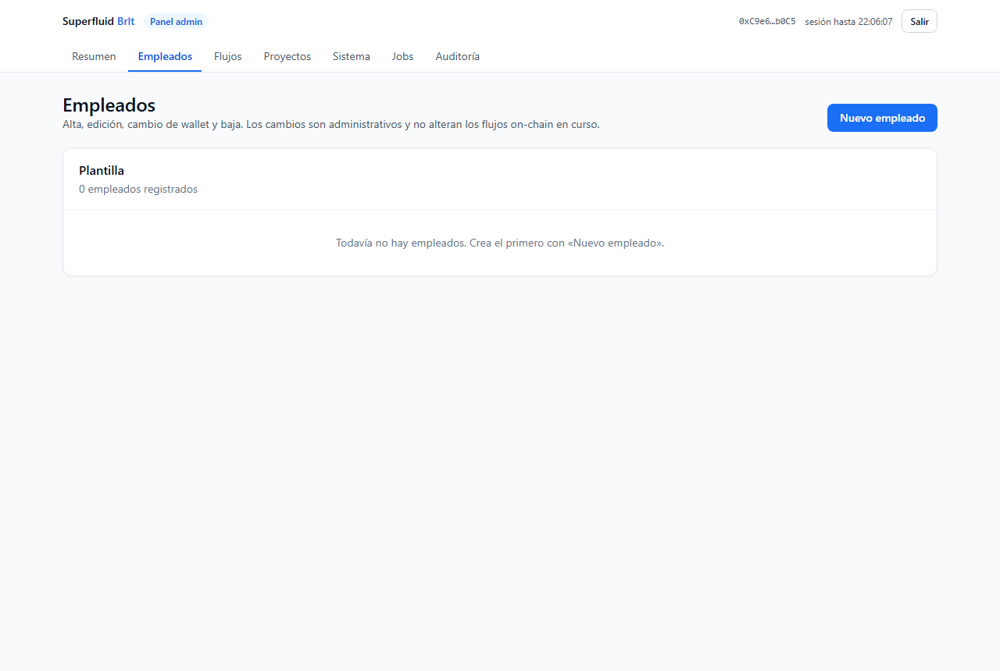

07-Manual-del-Admin\manual-admin.md
# Manual del Admin (guía operativa)
Empezar en 5 minutos
Tu primer flujo
- Entra con tu wallet admin en /login.
- Sistema → guarda las direcciones de BRLT/BrltX y el bloque de despliegue.
- Proyectos → crea un proyecto.
- Empleados → «Nuevo empleado» (nombre + wallet + importe + periodo).
- Flujos → Crear flujo → elige empleado, importe y periodo → «Aprobar y crear flujo» (MetaMask pedirá dos firmas: aprobar y crear).
 (Vista general del panel: tarjetas de resumen y menú lateral con todas las secciones.)
(Vista general del panel: tarjetas de resumen y menú lateral con todas las secciones.)
Flujos día a día
Operar un flujo
- Pausar: congela el devengo sin perder el tiempo pagado (el fin se aplaza).
- Reanudar: reancla con la misma tasa; el empleado no pierde devengo.
- Terminar: liquida lo devengado y devuelve el resto a tu wallet (dos firmas).
- Liquidar: solo para flujos vencidos (acumulado al empleado, resto a ti).
 (Lista de flujos: depositado, tasa, fin estimado, pendiente y estado reconciliados
con el contrato. Las acciones cambian según el estado.)
(Lista de flujos: depositado, tasa, fin estimado, pendiente y estado reconciliados
con el contrato. Las acciones cambian según el estado.)
Programados y lotes
Cuando hay mucho trabajo
- Programados: apunta una nómina futura (estado
próximo); cuando llegue el día, pulsa «Ejecutar» y firma (o Cancelar). - Lote: hasta 10 empleados con el mismo importe y periodo. Si se interrumpe la tanda, al reintentar se saltan los flujos ya creados (sin doble pago).

(Gestión de plantilla: alta, edición, baja y cambio de wallet con doble firma.)Tesorería
Emitir y quemar
- Pestaña Tesorería: el supply actual, el margen hasta el tope y los balances de tu wallet.
- Emitir (mint): hasta el tope de 50.000.000 BRLT.
- Quemar (burn): reduce el circulante de tu wallet; no toca los flujos activos.
 (Pantalla de configuración: RPC, contratos y parámetros validados contra la red.)
(Pantalla de configuración: RPC, contratos y parámetros validados contra la red.)
Mantenimiento y alertas
Que nadie tenga que revisar a mano
- Con Jobs puedes ejecutar a mano la reconciliación, el espejo de eventos y el chequeo de nóminas vencidas.
- Los avisos en pantalla señalan flujos vencidos sin liquidar y flujos que terminan en menos de 24 h.
- Empleados con varios flujos activos piden confirmación con el total agregado antes de añadir otro (sin sustituir pagos por accidente).
 (Panel de trabajos: estado de cada job, último resultado y botón «Ejecutar». )
(Panel de trabajos: estado de cada job, último resultado y botón «Ejecutar». )
Seguridad del admin
Buenas prácticas
- La wallet admin nunca se guarda en la web: solo firmas en tu navegador.
- Las sesiones duran 2 horas; revisa Auditoría para ver quién hizo qué.
- Si cambias la wallet de un empleado, la app te lista sus flujos para migrarlos con el cambio de receptor en una sola transacción.
 (Historial de acciones: login, altas, cambios de wallet, operaciones de flujo y jobs.)
(Historial de acciones: login, altas, cambios de wallet, operaciones de flujo y jobs.)